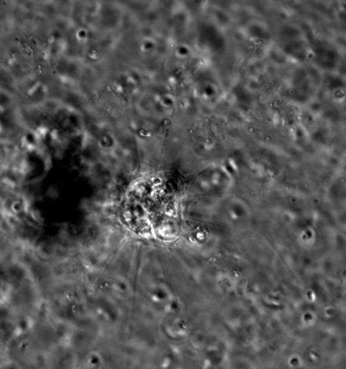

Gallery
Interior of the termite gut
Interior of the termite gut
Interior of the termite gut
Radiolarian
Diatom
Foraminiferan
Fabrea salina
Foraminiferan
Foraminiferan
Desmid, Closterium moniliferum
Stylonychia sp.
Stentor polymorphus
Freshwater sponge, freshly settled
Freshwater sponge, freshly settled, a week later
Difflugia sp.
Foramiferan
Diatom
Possible Pyrocystis sp?
Ciliate
Thecate choanoflagellate and Oxyrrhis marina

Heliozoan feeding on a choanoflagellate from a backyard birdbath sample

Stentor and Euplotes
Stentor and Euplotes
Ciliate that recently fed on dinoflagellates (brown objects)
Flatworm
Oxyrrhis marina
Diophrys with ingested dinoflagellate
Evolution of homemade microscopes part V: Replica van Leeuwenhoek microscope
Evolution of homemade microscopes part V: Replica van Leeuwenhoek microscope
My cheek cell imaged using the van Leeuwenhoek microscope
Fish scale (left) and skin cells (right) imaged using the van Leeuwenhoek microscope
Ant leg imaged using the puttyscope
Evolution of homemade microscopes part IV: van Leeuwenhoek style puttyscope
Evolution of homemade microscopes part III: Legoscope
Spider eye imaged using Legoscope
Spider fangs imaged using Legoscope
Spider plant flower petal imaged using Legoscope
Flower stamen with pollen imaged using the Legoscope
Flower petal imaged using the Legoscope
Computer monitor pixels imaged using reversed smartphone lens (Evolution of homemade microscopes part II: Reversed smartphone camera lens, not pictured)
Mushroom imaged using reversed smartphone lens
Buddhist monk robe imaged using reversed smartphone lens
Leaf imaged using reversed smartphone lens
Mole crab antenna imaged using reversed smartphone lens
Fruit fly wing imaged using reversed smartphone lens
Paper towel and marker ink imaged using reversed smartphone lens
Microbeads settling in water imaged using reversed smartphone lens
Beer foam imaged using reversed smartphone lens
Flower petal imaged using reversed smartphone lens
Metal imaged using reversed smartphone lens
Hair root imaged using reversed smartphone lens
Cicada eye imaged using reversed smartphone lens
Bark imaged using reversed smartphone lens
Copepod imaged using reversed smartphone lens

Finger imaged using reversed smartphone lens
Arthropod larva imaged using reversed smartphone lens
Evolution of homemade microscopes part I: van Leeuwenhoek style index card microscope